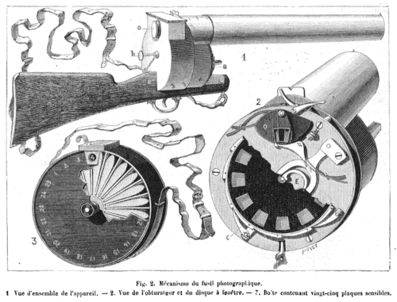

I.Die Dreifaltigkeit
Ich frage, ob ich kommen kann. Gar kein Problem. Ich darf rein.
Ich bin für Boys Noise da. Meine zwei Freunde und ich lieben Musik, Und die Musik war wirklich gut. Ich war nicht da, um jemanden kennenzulernen und oder mich abzulenken. Ich war da für die Musik und für den Ort, einen Ort, den ich sehr, sehr gern habe. Wo ich respektvoll mit allen umgehe, die respektvoll mit mir umgehen.
Die ersten beiden Reihen vor dem DJ sind für die Medien reserviert. Das ist fair, Medien sind wichtig. Also stehen wir in der dritten Reihe. Immer schön laut und nett auf den billigen Plätzen. Aber die Medien stehen nicht nur vor dem DJ-Pult, sondern auch dahinter. Und von dort aus ist das Target nicht der DJ. Das Ziel sind wir.
Denn was ist ein DJ ohne eine gute Crowd? Was im Nachtleben kaum jemand laut sagt: Die Crowd ist wichtiger als der DJ.. Es ist ein Symbiose.
Es gibt drei: die Musikmacher, die Medienmacher und die Stimmungsmacher, also die Crowd. Diese Dreifaltigkeit muss im Einklang sein. Sie bilden ein Schwarm aus 3 Unter-Schwarmen. Und ein Schwarm hält zusammen. Er greift sich nicht selbst an.
Wenn jemand aus der Reihe tanzt, dann passt sich der Schwarm dem Contrarian an.
II.Im Visier
Die ersten Kameras, die man aus der Hand benutzen konnte, sahen aus wie Gewehre. 1882 baute Étienne-Jules Marey seine fotografische Flinte: Kolben, Lauf, Abzug. Die Sprache hat das nie vergessen. Wir schießen Fotos. Wir haben jemanden im Visier.

Ich trage eine Cap und eine Sonnenbrille, weil ich auf diesen Bildern nicht erkannt werden will. Ich bin für die Musik da, nicht um im Kontext der Musik öffentlich dargestellt zu werden. Wenn mich jemand im Visier hat, schaue ich kurz weg. Die meisten Medienmacher verstehen das sofort. Man kann ohne Worte zustimmen und ohne Worte ablehnen. Das kriegt man hin, wenn man respektvoll mit Menschen umgeht.
Eine Fotografin nervt das. Sie kommt immer näher, bis sie mir ein Blitzfoto ins Gesicht schießt. Ich sage: Meine Freunde haben kein Problem damit, mach doch Fotos von denen. Wieder ein Blitz in mein Gesicht. Ich sage:
Eine andere Frau spricht sie auch an, ungefähr in ihrem Alter, jemanden, auf den sie vielleicht eher hört, weil ich jünger bin und aus einer anderen Klasse komme. Auch sie erklärt ihr, dass das nicht schön ist.
Ich denke, damit ist es geklärt. Aber die Lust zu tanzen ist weg. Ich kühle mich woanders ab. Es klingt kindisch, dass mich das so beschäftigt. Aber es ist einfach das Gefühl, das es auslöst, wenn man unwillentlich wieder und wieder und wieder abgeschossen wird, obwohl man ohne Worte und mit Worten Nein gesagt hat.
„ein Nein ist kein Nein“
III.Das letzte Foto
Nach einem Moment habe ich wieder Lust zu tanzen. Da kommt dieselbe Fotografin und schießt ein Foto von mir.
Ich gehe zu ihr, fasse sie an der Schulter und sage: Ich habe dir gesagt, ich will keine Fotos. Bitte zeig mir dein letztes Foto.
Sie sagt: Du bist da nicht drauf.
Ich sage: In Ordnung, dann zeig es mir.
Sie sagt: Ich bin vom Team, ich muss gar nichts.
Ich sage:
Who the fuck are you?
Sie geht weg. Die Leute um mich herum zeigen mir die kalte Schulter.
IV.Das Kleingedruckte
Genau in diesem Moment hebt ein Kollege eine Kreditkarte vom Boden auf und betrachtet ganz, ganz genau das Kleingedruckte. Der Name ist kaum zu lesen. Und eigentlich ist er auch egal. Die Karte erfüllt ihre Funktion, solange sie Geld überweisen kann. Wer Geld überweisen kann, dessen Name darf klein gedruckt sein. Der Name ist die Person. Die Person trägt Verantwortung. Die Funktion nicht.
Ich verstehe, warum alle Medien machen. Mit Musik allein verdient man kaum noch Geld, Spotify zahlt nichts. Das Geld kommt über Deals, und für Deals muss Musik sichtbar sein. Deshalb gibt es heute nicht nur DJs, sondern auch VJs. Das Publikum erwartet eine visuelle Performance, und es stimmt zu, selbst ein Teil davon zu sein.
Aber stimmt es wirklich zu? Ist mein Eintritt schon meine Zustimmung, die unwiederruflich ist? Darf ich nicht mehr fragen, bitte jetzt nicht mehr? Dann war mir das nicht bewusst. Ich verstehe, dass mein Eintritt in kinky Clubs eine erste Zustimmung ist und eine Angabe meiner Suche: Ich will berührt werden. Genauso will ich an solchen Orten sagen können, so kannst du ein Foto von mir machen und so halt nicht.
Also fass mich nicht an mit deinen Händen oder deiner Kamera, ohne zu fragen.
V.Glauben tue ich in der Kirche
Kurz danach steht der Türsteher neben mir und bittet mich, meine Jacke zu holen. Ich hole meine Jacke. Meinen Zettel finde ich nicht. Ich weiß, die Nummer ist 208, aber um respektvoll zu sein, sage ich: Ich glaube, 208.
Der Türsteher sagt, wie ein guter Vater: Glauben tue ich in der Kirche.
Ich glaube überall, wo ich bin. Ich bringe die Kirche mit mir.
Ich gehe freiwillig raus. Draußen steht sie. Sie schaut mich mit großen Augen an und erwartet, dass ruckzuck eine Entschuldigung kommt, weil ich doch wieder rein wollen sollte. Aus meinem Mund kommt: Wollen wir reden?
Nach Barbara Kruger. Vgl. Untitled (Your body is a battleground), 1989.
Sie sagt Nein.
Ich frage nach ihrem Namen. Sie sagt wieder Nein und geht rein.
Der Mann der Kirche bietet mir an, weiterzugehen. Ich nehme dankend an. Meine Freunde kommen nach.
Im Deutschen steckt in dem Wort für den schlimmsten Übergriff die Gewalt selbst: Vergewaltigung. Sich Gewalt über jemanden nehmen, ohne seine Zustimmung.
Was ist eine digitale oder mediale Vergewaltigung?
Wann ist Gewalt in Ordnung?
Weißt du was Gewalt ist?
Brauchen wir neue Worte für Gewalt?
Es ist wie ungefragte Nacktbilder zu bekommen, nur umgekehrt: Nicht jemand schickt dir ein Bild, um das du nie gebeten hast, sondern jemand nimmt sich ein Bild von dir, obwohl du ihm persönlich gesagt hast, dass du es nicht willst. Und das ist kein BDSM Play Shooting, bei dem ich mit deiner Macht, da du die Kamera in der hand hälst und bestimmst, wer auf den Bildern erscheint. Ich sage dir nur, ich will auf DEINEN Bildern nicht erscheinen
VI.Was möglich wäre
Es gibt einen Unterschied zwischen einem Foto, das man von jemandem macht, und einem Shot, den man schießt. Das eine will festhalten, was im Raum schon da ist, die Energie, die Menschen, wie sie sind. Das andere legt über eine Szene, was man selbst sehen will, und zwingt ihr einen Stil auf, den sie nicht will.
Mach Fotos von deinen Freunden. Lass deine Freunde Fotos von dir machen. Und wenn du mich nicht kennst, frag mich.
Also um aus dieser Situation zu lernen, frage ich dich ganz nett ob ich ein Foto von dir machen darf, dann kannst du es runterladen und wenn du magst auf dieser Seite verewigen mit einem kleinen Spruch für den Engel und den Teufel auf deiner Schulter, und deiner Signatur.
Darf ich ein Foto von dir machen?
Die Kamera läuft nur in deinem Browser. Nichts wird hochgeladen, solange du es nicht selbst willst.
PinnwandDie, die Ja gesagt haben
Noch hängt hier nichts. Sag oben Ja, mach deine vier Bilder und häng sie hier auf.
Wer hier hängt, hat Ja gesagt. Alle sehen diese Wand.